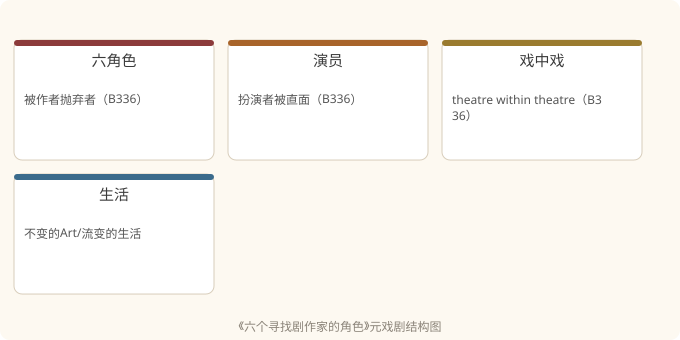

六个寻找剧作家的角色
一、基本信息
| 作者 | 路易吉·皮兰德娄 |
|---|---|
| 成书/出版 | 1921年（Britannica B336：Sei personaggi in cerca d'autore (1921)） Luigi Pirandello — Encyclopaedia Britannica（百科全书） |
| 国别/地区 | 意大利 |
| 时代 | 近代 · 20世纪20年代 |
| 体裁 | 戏剧 |
| 语言 | 意大利语 |

《六个寻找剧作家的角色》元戏剧结构图（主题·结构图）
二、创作背景
Britannica（B336）：'the most arresting presentation of the typical Pirandellian contrast between art, which is unchanging, and life, which is an inconstant flux'——皮兰德娄式'艺术不变/生活流变'对立最惊人的呈现。
Britannica（B336）：被作者抛弃的角色登台，'with more vitality than the real actors'；本剧引入'theatre within the theatre'装置——被弃角色直面将要扮演他们的演员。
Britannica（B336）：1923年巴黎演出使其名扬；影响了法国戏剧、荒诞派（贝克特、尤涅斯库、热内）、阿努伊、萨特与T.S.艾略特诗剧。
三、内容脉络
排练场上，六个被作者抛弃的角色闯入，要求剧团上演他们未曾完成的故事（B336：rejected characters...confront the actors who would portray them）。
戏中戏的层层展开：'真实'与'扮演'无法区分（剧情细节通说待核）。
四、主要人物表
| 人物 | 身份 | 说明 |
|---|---|---|
| 父亲 | 六角色之首 | （通说待核，B336未载人名） |
| 继女 | 六角色之一 | （通说待核，B336未载） |
| 剧团经理 | 排练主持 | （通说待核，B336未载） |
五、主题与艺术特点
- 艺术不变与生活流变之对立（B336：art...unchanging / life...an inconstant flux）。
- '戏中戏'：戏剧自身的主题化（B336：theatre within the theatre）。
- 身份的流动性（B336 作者论：'one, no one and a hundred thousand, according to his appearance to this person or that'）。
六、影响与评论
- Britannica：影响法国戏剧、荒诞派（贝克特/尤涅斯库/热内）、阿努伊、萨特与T.S.艾略特诗剧（B336）。
Luigi Pirandello — Encyclopaedia Britannica（百科全书） - Britannica：1923年巴黎演出使其名扬（B336）。
Luigi Pirandello — Encyclopaedia Britannica（百科全书）
七、阅读建议
难点
- 元戏剧的套层结构。
- 皮兰德娄'幽默论'背景（B336：L'umorismo (1908)——论文）。
- 《六个寻找剧作家的角色》中译本（人民文学/上海译文等——通说待核）。
- 意大利文原版。
皮兰德娄首选；再读《恩里科四世》（1922）。
八、待核实
- 六角色人名核对（B336未载）。
- 1921年罗马首演剧场待核。
- 1923年巴黎制作（Pitoëff说）待核。
本页主要来源
路易吉·皮兰德娄的其他收录作品：六个寻找剧作家的角色一个、无、十万个恩里科四世